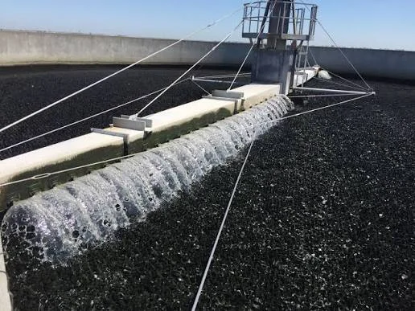
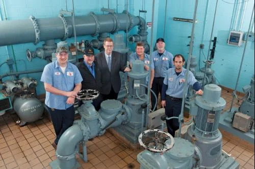
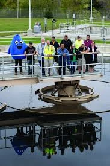

Kearny’s fighting for water. But there’s another battle happening quietly at the wastewater treatment plant — and if you’ve noticed the smell, you already know something’s wrong. Here’s what’s happening, why it’s safe, and what the Town is doing about it.
You smell it before you see it. A thick, sulfurous odor that rolls through town on warm evenings — settling into yards, seeping through screen doors, and making you wonder...
It's not skunks. It's hydrogen sulfide (H₂S) — a gas produced when the biological treatment process at Kearny's wastewater plant breaks down. The bacteria that normally digest sewage have been disrupted, and without them, the system produces that unmistakable rotten-egg smell.
The good news? It's not dangerous at these levels. Current readings are 0.1 ppm — one hundred times below the OSHA workplace exposure limit. But "safe" doesn't mean "acceptable." The Town knows it, and they're fixing it.
Wastewater treatment is biological. Living bacteria break down waste, clean the water, and keep odors in check. When those bacteria die or get overwhelmed, the system fails — not catastrophically, but noticeably.
Several factors converged: an unknown industrial pollutant entered the system and killed a significant portion of the beneficial bacteria.The Town is actively monitoring system inputs to trace the source and ensure it doesn’t happen again The extreme heat accelerated the problem. And with the town’s resources stretched thin fighting the water crisis, the wastewater plant couldn’t get the immediate attention it needed.

Hydrogen sulfide (H₂S) is detectable by smell at concentrations as low as 0.5 parts per billion — your nose is incredibly sensitive to it. Current levels in Kearny measure approximately 0.1 ppm (100 ppb), which is 100 times below the OSHA 8-hour workplace exposure limit of 10 ppm. The smell is unpleasant, but it poses no health risk at these concentrations.
Fighting a water crisis and a wastewater crisis at the same time? Most towns would crack under the pressure. Kearny’s leadership didn’t blink.
Mayor Stacy mobilized the Town Council, engaged the Army Corps of Engineers, and secured $1.54 million in federal funding to rebuild the wastewater treatment system. The same leadership that declared a Level 5WE water emergency is now tackling the plant’s biological failure with the same urgency and transparency.
The repair strategy is straightforward: rebuild the biology, upgrade the hardware, and protect the system from future shocks.
Reintroducing industrial-grade beneficial bacteria to restart the biological treatment process. These microorganisms are the workhorses that break down waste and eliminate odor-causing compounds.
Installing new aeration blowers to increase dissolved oxygen levels in the treatment basins. More oxygen means healthier bacteria, faster digestion, and dramatically reduced H₂S production.
Partnering with neighboring facilities to receive biological “seed” material — healthy, active bacterial colonies transplanted into Kearny’s system to jumpstart recovery.

The U.S. Army Corps of Engineers has committed $1.54 million to rebuild Kearny’s wastewater treatment infrastructure. This isn’t a band-aid — it’s a full system overhaul.
The scope includes replacing the existing backwash tank, removing deteriorated detention tanks, installing a redundant filter vessel, and running new 8-inch sewer lines to the existing main. When complete, Kearny will have a modern, resilient wastewater system built to handle the town’s needs for decades.

The fastest way to help the plant recover? Stop flushing things that kill the bacteria. Every item on this list disrupts the biological process and makes the smell worse.
Kearny is fighting on two fronts — and winning on both.
🏠 Back to Home 💧 Project 88 / MARS